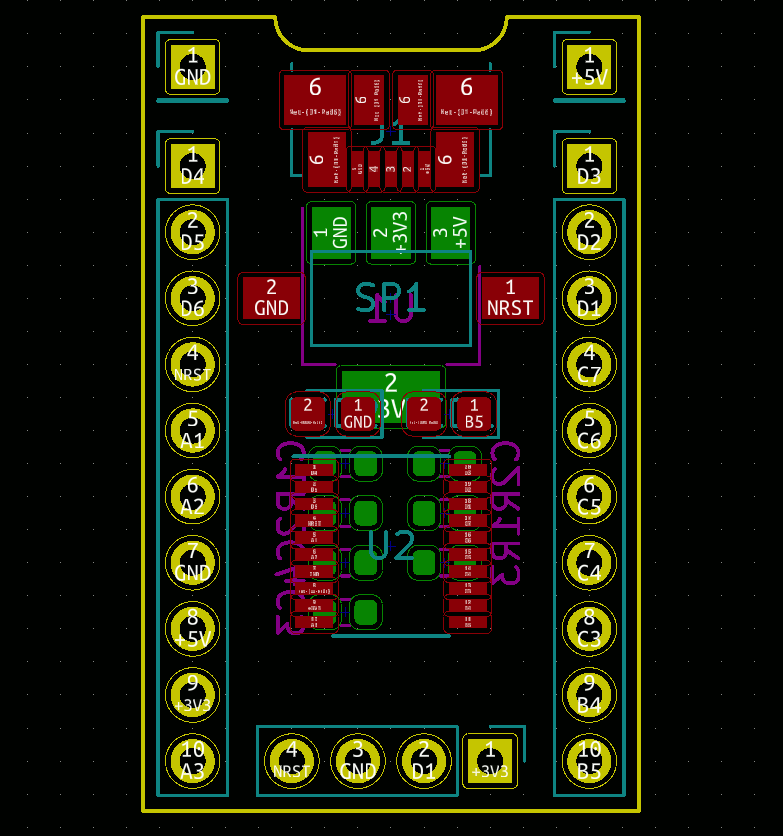
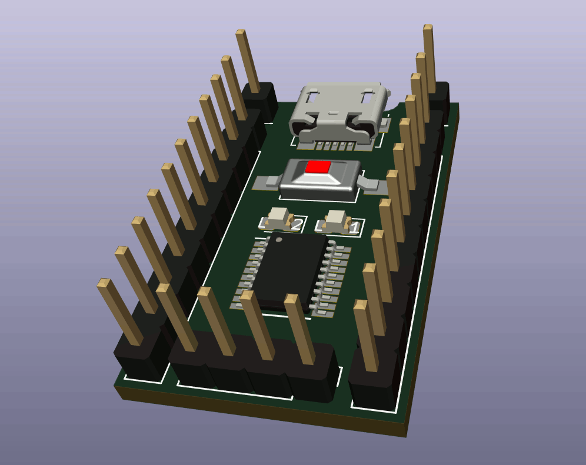
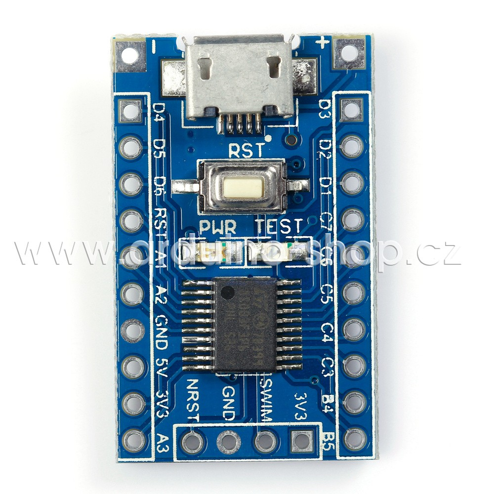
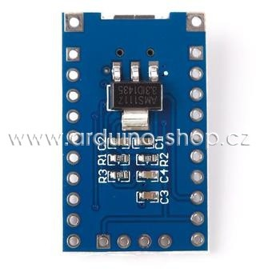

Module
Development board ARM STM8S103F3P6 STM8
This project template is the basis of an
STM8S103F3P6 Mini Module board.
Development board for the advanced.
Use STM8S103F3P6 as the master IC.
You can use 2.54 pin on the board or power supply pad, the pad when using the power supply, the input voltage range of 4.5 V-15V, can output to the outside through the pin 3.3 V! (Note: 5V pin's voltage is the input voltage of the module.)
leads to all pins, the pins next to the pin marked the label with a reset button, power LED, and the program demonstrates LED, small but perfectly formed.
Support SWIM debug mode.
Images:




(c)2019 Sebastian Denis